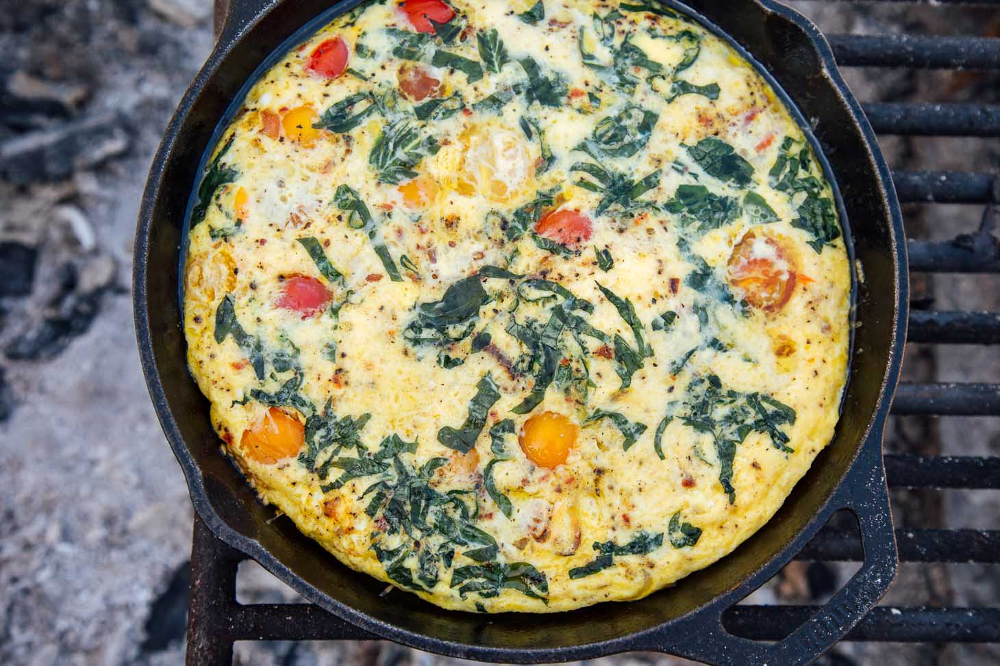

Mirelurk Egg Omelette

Quick and easy breakfast omelette, made from the egg of the wretched Mirelurk. Restores +50 AP!
Ingredients
- 1 vessel dirty water
- 1 Mirelurk egg
Steps
- Whisk egg and dirty water until fully blended and frothy
- Preheat your skillet to 375 F
- Set cooking station to medium-low and slowly pour egg mixture into skillet
- Flip when underside has lightly browned
- For a real treat, add in chopped Molerat chunks or Radscorpion bits!